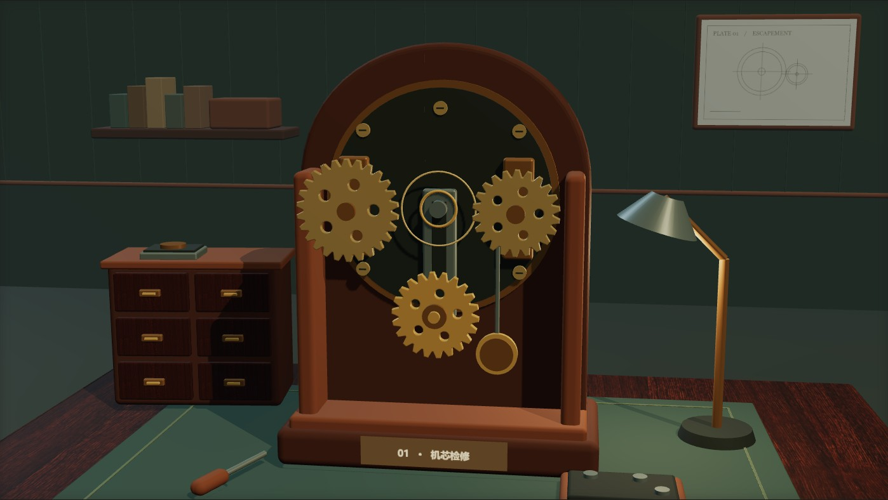
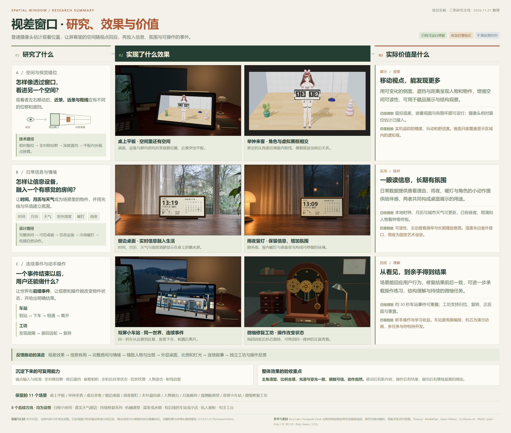
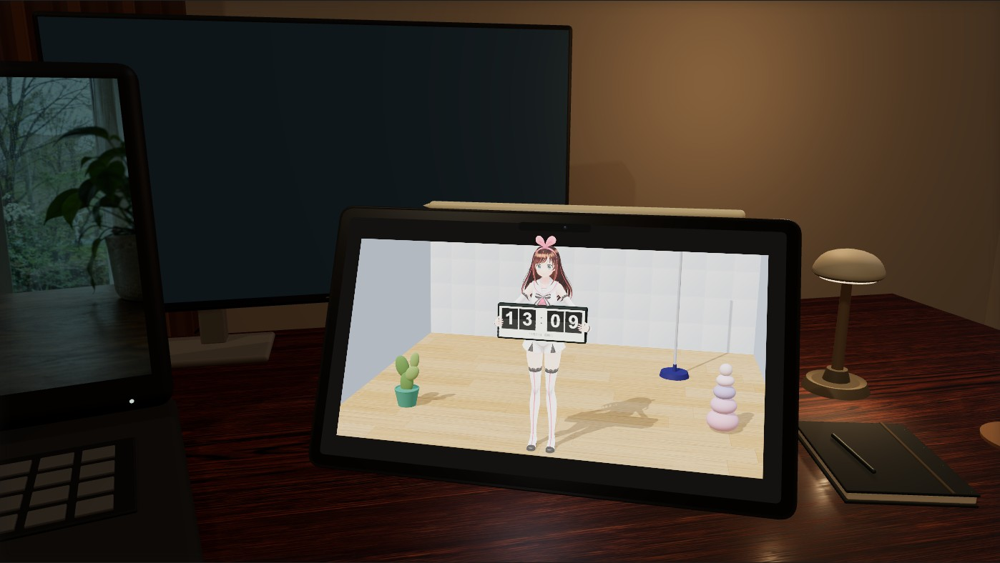
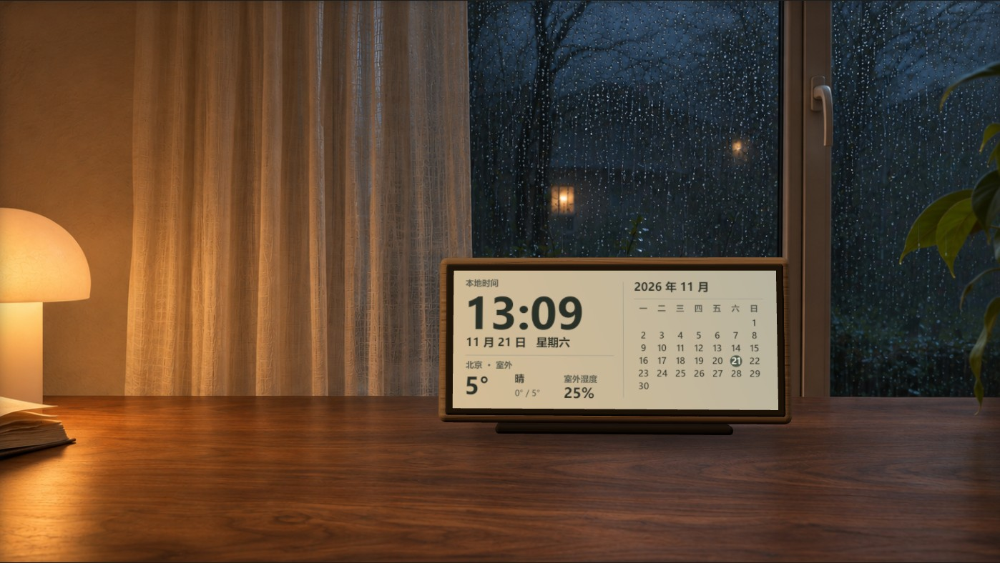
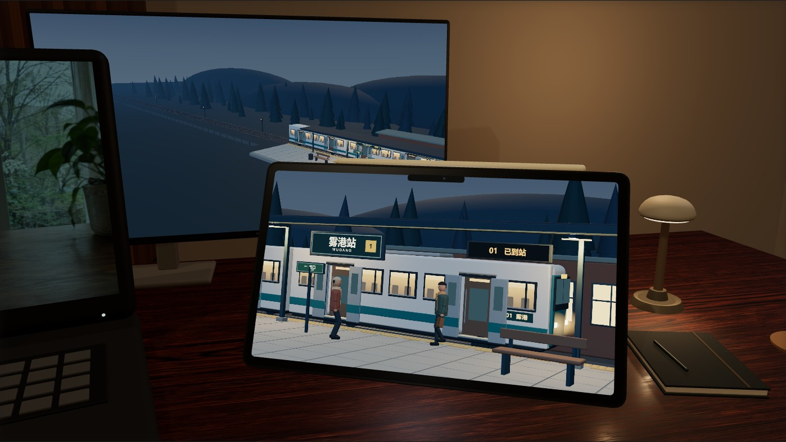
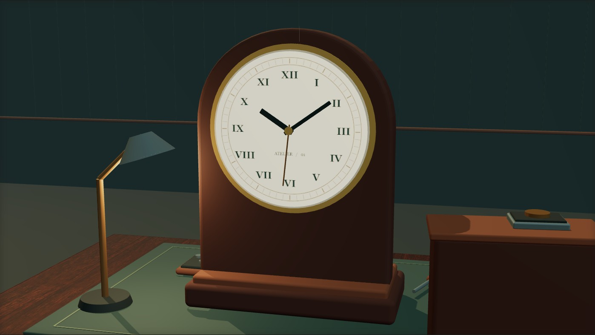

视点、遮挡与整体场景
校准相对眼位、计算非对称投影，观察近远层次、虚拟框遮挡和屏内外视图衔接。用户反馈推动比例、机位、灯光与人物动作的修正。
SPATIAL WINDOW / RESEARCH ARCHIVE
普通摄像头、观看视点与一个可进入的微缩空间。把我们的目标、误解、尝试、返工和技术判断，放在同一份档案里。

WHAT WE BUILT / WHY IT MATTERS
研究普通摄像头与观看位置怎样驱动屏幕中的空间，并把时间信息、氛围与可操作事件放进同一个环境。我们实现了 11 个可切换场景，逐步从视差与出框走到嵌套桌面、双机位连续叙事和齿轮修复。
校准相对眼位、计算非对称投影，观察近远层次、虚拟框遮挡和屏内外视图衔接。用户反馈推动比例、机位、灯光与人物动作的修正。
平板里有房间，雨夜桌面里有实时墨水屏，远近双屏看到同一辆列车，独立工坊可以装回齿轮并查看同一座钟的正反面。
已有代码可继续用于互动展示、氛围桌面、故事原型与修复练习。信息可读性、陪伴感、学习收益、实机追踪稳定性与长期留存仍需体验验证。
公开演示默认进入微缩修复工坊。“桌上平板”和“举钟来客”使用项目已有的 VRoid 样例人物，支持持钟与看钟动作。引导图及历史实帧记录的是本机 MMD 版本，两者人物外观不同。

这份档案把用户提出的目标、代码中已有的能力、原作者的公开说明和后续设想分别写明。原帖本轮访问返回 403，原作部分补查了作者当前官网。场景截图来自本项目本地运行。
没有找到匹配的主题。可以尝试“视差”“雨夜”“价值”“摄像头”或文件名。
INTENT
在普通 Windows 电脑上，左右挪动身体，就能像隔着一扇窗看进另一个空间。空间里有值得看的东西，也有继续看、继续操作的理由。
“我左右移动时，能像透过屏幕往房间里看一样看到不同角度。”最初的功能目标
近景、远景、窗框与人物要有不同的运动幅度。侧身能看见遮挡后的墙角、月台或机芯，观看位置与画面有稳定关系。
房间、工作台、屏幕、灯具、角色与工具共享比例、透视和光照。缩小看时仍像同一个场景，主角清楚可辨。
时间、月历和天气提供日常用途。雨夜与暖灯提供氛围。修复、发现与后续事件让观看产生回应。
用户连续反馈形成了明确的方向。需要精致的人物与自然动作，需要保留满意版本，也需要让每个主题拥有合适的空间形式。我们曾把平板当成通用模板，工坊阶段的反馈促使实现改为独立工作台。
用视点追踪增强空间感，把日常信息、陪伴氛围或可操作的小故事放进这个空间。平板、窗户、柜子和工作台都可以成为具体场景的组成部分。
THE ORIGINAL
研究起点是 Doui Lab 发布的那段演示。用户先追问产品价值、关联主页、操作方式，再追问人物如何遮住上边框。这些问题决定了我们需要理解的三件事——输入来自哪里，深度怎样成立，用户为什么会持续使用。
原始 X 链接 ↗ · 本轮直接访问受限，未逐帧复核全片
作者把产品描述为能从侧面看进去的房间。应用会结合眼睛位置与设备倾斜更新景色，面部追踪可开关；官网交互演示用拖动模拟视点。角色或时钟向前摆放时，可与画面内黑框重叠。当前介绍还包含房间选择和定时提醒等用途。
| 问题 | 现在的理解 | 依据与范围 |
|---|---|---|
| 作者也用摄像头控制角度吗？ | 当前应用支持面部追踪。隐私说明写明，兼容 iOS 设备可使用 ARKit / TrueDepth；Android 使用普通前置摄像头估计相对视点。 | 作者隐私说明 ↗ |
| 为什么网页里好像只能拖动？ | 官网把网页版本标为视点模拟，并明确写出网页不使用摄像头。拖动网页与原生应用追踪是两种体验入口。 | 作者产品页 ↗ |
| 是不是立体显示器？ | 作者帮助页将其称为面向单一观看视点的错觉。普通屏幕显示的透视随观看位置更新。 | 作者帮助页 ↗ |
| 视频里具体用了哪套技术？ | 当前官网能确认产品级功能。该条视频拍摄时的版本、设备、跟踪路径和内部代码，仍缺少直接材料。 | 待原帖、作者说明或源码进一步确认 |
| 它提供什么价值？ | 从产品介绍归纳，可以把旧手机或平板变成具有空间感的桌面时钟，并通过房间、角色与提醒增加观看体验。用户留存与实际使用收益仍需要体验验证。 | 基于公开产品说明的归纳 |
以上是截至 2026 年 11 月 21 日核对的当前官网说明。讨论早期的理解与当前功能存在时间差，网页模拟的输入方式也不能用来推断视频拍摄时的输入方式。
HOW DEPTH READS
屏幕被当成固定的窗口。人在窗口前移动，程序从新位置重新观察内部世界，近处物体与远处物体的遮挡随之改变。
拖动滑块，留意框线保持固定，墙面与前景的移动幅度不同。此图用于解释层次关系，真实演示采用三维投影。
硬件的物理边框位于实际显示区域之外。普通画面无法在那部分表面上绘制角色。
在画布内部留出黑边，并把它放在某个深度平面上。头饰比它更靠近观察者时，会通过深度遮挡盖住黑边。
参考画面还包含平板外侧的桌面和设备。我们后来把这层外部空间也建成了虚拟场景，形成“桌面里有平板，平板里有房间”的嵌套。
“再往外，我们外层还是一个空间啊。”用户指出早期复现缺少外层桌面
人物、时钟、墙与地板可以同处一个计算机生成的内部房间。视频最终画面中的设备外部环境，单凭截帧仍难确认所有制作环节。我们能明确的是本地版本的实现——外层桌面、平板和屏内房间都由程序构造，设备屏幕使用单独渲染的内部视图。
空间感还依赖近大远小、接触阴影、材质、前景遮挡和观看距离。左右平移头部最直接地体现运动视差；单纯转头而眼睛位置变化很小，画面变化通常也较小。
DECISIONS & REVISIONS
按对话先后整理。这里保留改变方向的反馈，便于后续创作沿用已经明确的目标。各阶段没有完整的独立日期记录。
用户希望在 Windows 上复现“透过屏幕往里看”的效果，要求新建子项目。由此确立本地网页、摄像头追踪与鼠标预览两种入口。
讨论从“怎么做”转向“价值在哪里”。用户指出原帖关联产品主页，并多次追问原作是否真正追踪头部、是否只有拖动，以及人物如何遮住上边框。
在理解结构后，用户要求参考架构做自己的效果，并明确保留已有版本。观测舱、月面邮局、人物展台等成为不同层次关系的试验入口。
用户希望角色分别展示时间和日历，并带上天气等信息。木叶晨间桌探索了人物分工与信息展示，但人物形象和整体画质仍未达到期望。
用户提出，把时间、日历、天气、湿度当成产品放进真实感大场景。由此形成窗边桌面——背景房间与前景桌面承接独立的墨水屏设备。
保留窗边桌面，强化窗外雨、屋内暖灯和桌上墨水屏。时间、日历、天气与湿度继续显示，视觉氛围与数据更新各自承担功能。
用户觉得原视频的前后遮挡更强，要求精致的 3D 人物，随后要求先复现参考效果。举钟来客和桌沿来客分别探索举钟、扶窗与递牌。
用户用视频截图指出，平板外还有桌面、笔记本和后方设备。场景由单层房间扩展为外层桌面与屏内房间，建立嵌套视点。
用户先指出电脑比平板小，随后要求维持正确比例，把镜头拉近，让平板成为主角。笔记本在侧面、显示器在后方各露一部分，仍能感到外层空间。
讨论上下左右扩展观察，保留平板近景构图。增加夜间桌灯与人物偶尔低头看钟再抬头，让空间里的角色有细小、低频的活动。
用户圈出画面里突兀的黄色灯罩，进一步指出灯的位置和效果不对、房间需要被照亮，电脑和平板也要合理摆放。灯光因此成为整体空间设计的一部分。
用户指定后方显示器呈现远景、平板呈现月台近景，同一辆列车从远处驶来再进站。随后追问价值、下车与后续，推动旅客下车、相遇、走向出口和列车离站。
用户选择微缩修复工坊。最初版本继续沿用了双屏桌面，用两块屏幕展示钟的正反面，用户随即指出平板只是一个样式，不适合继续套用。
最新版本直接面对机械钟和工作台，加入零件柜、工具、桌灯、墙面图纸与书架。可以拖回齿轮，观看机芯复转，再绕到同一座钟的正面。
效果要完整，主角要清楚，人物要精致，空间要可信。演示还要回答“之后发生什么”“我能做什么”“为什么还想回来”。
SCENE ATLAS
以下为当前场景切换器中可进入的全部入口。现有代码保留了这些版本；对话中的每一次中间调参并没有形成可单独切换的历史快照。




显示全部 11 个场景
以平板为画面主角，外层有木桌、笔记本、显示器、触控笔和灯，屏内人物托着本地时间翻页钟。支持昼夜灯光与环顾。
后方显示器看远景，平板看月台。列车到站、开门，旅客下车、碰面并离开，列车继续驶出。支持重播。
直接打开工作台，拖动铜齿轮回到轴心，观察齿轮、摆锤和指针恢复运动。可切换钟面与机芯，重置后再修。
直接观看明亮的屏内房间，人物举起翻页钟，头饰与虚拟黑边形成遮挡。人物偶尔低头看钟后抬头。
人物扶着窗沿，把时间木牌递到面前。手、窗框和房间形成前后关系，握持姿势与眨眼在运行时控制。
窗外下雨，屋内暖灯照着桌面，墨水屏显示时间、月历、天气与室外湿度。固定雨夜氛围与天气数据分别更新。
白天真实感窗景与木桌上放置墨水屏。展示本地时间、今天高亮的月历，以及所选城市的天气。
佐助展示月历，鸣人展示时间，场景同时提供天气信息。探索人物分工与晨间桌面主题。
在展台里查看三维模型，可导入内嵌网格和贴图的 GLB，调整正面、侧面和背面。默认示例为宇航员。
通过月兔、窗框和后方邮局的距离关系观察近景与远景，作为独立的原创出框主题保留。
舷窗、星球、工作钟和探出窗框的巡检机器人，组成早期空间原型，便于观察基本视差与遮挡。
图像为当前版本的运行截图。举钟人物为 (c) Kizuna AI，本地模型按原项目说明加载；场景入口的存在与美术达到满意程度分别记录。
SPACE & LIGHT
电脑、平板、键盘与桌面应具有可信的相对尺寸。比例正确后，用机位和裁切突出主角。桌上平板版本的目标是近景看清人物，电脑在旁边与后方露出部分，外层桌面仍然可读。
人物在缩小画面时应能辨认面部、动作和持物。角色质量、屏内占比与屏幕所占面积需要一起调节。
最初构图之外应留有可观察的墙角、台面、灯架与工具，侧身时能看到新内容。桌面版的拖动与方向键提供有限幅度的环顾，头部平移提供连续视差。
目前各场景仍有设计好的观看范围。完整漫游、走进另一间房和无限延展空间属于后续开发范围。
被圈出的黄色物体是早期灯罩。它的问题包含摆放、尺度与照明联系。灯罩的形状、灯杆和底座应解释光从哪里来，桌面、设备和墙面应有一致的亮暗变化。
桌面版使用环境光、主光、补光和灯具局部光源，并有自动、白天、夜晚三种选择。工坊使用自己的暖光、冷色补光和桌灯。
木材、金属、玻璃、皮肤与屏幕应该有不同的反射和粗糙程度。脚与地板、设备与桌面之间需要接触关系。屏幕发光应与房间亮度协调。
程序几何适合验证机制。达到用户要求的精致人物和可信小物件，仍依赖更好的模型、贴图、动画与统一美术。
先确定主角和观察距离，再定设备比例与空间位置，然后设置灯具和实际受光区域，最后检查动作与细节。把截图缩小再看一次，确认第一眼仍落在预定主体上。
REASONS TO STAY
用户希望场景能令人产生感觉，也希望信息和动作有意义。我们的尝试逐渐形成三种使用理由。
时间、星期、今天在月历中的位置、城市天气、温度与室外湿度。信息应足够清楚，在背景里长期放置时仍可用。
暖灯、雨滴、偶尔低头看钟的角色，让空间保持活动。用户明确要求动作自然，频率和幅度要适合持续观看。
侧身后看见之前挡住的内容，齿轮装回后整座钟开始运行，或旅客下车后继续发生相遇和离开。
窗外冷雨提供远景和时间感，屋内暖灯形成可停留的区域，墨水屏把日常信息安静地放进其中。当前背景由生成图像分层呈现，窗玻璃雨滴由着色器补充运动，屏上文字实时更新。
雨夜是固定的艺术设定。城市天气通过网络查询，与画面是否下雨分别控制。湿度来自所选城市的室外天气数据，本项目尚未接入房间内温湿度传感器。
“有氛围”“愿意长期摆着看”“每天有帮助”目前属于产品目标。已有演示能展示组合方式，但没有长期使用、注意力负担或留存数据。后续可以让真实使用者记录一天里主动看了几次、看到了什么、是否愿意再次开启。
ONE WORLD / TWO VIEWS
“后面的显示器是车站远景，平板是月台近景……两个画面要衔接自然，侧身还能看到月台的不同角度。”小车站的明确需求
这里的双屏是同一个网页三维桌面里的两块虚拟显示设备。它们观察同一个场景、同一个列车对象和同一条时间线。后方机位负责展示驶来的过程，平板机位负责月台近景与观看视差。
代码中的完整过程约 30.1 秒。列车前 9 秒行进，随后用约 5.1 秒减速，到站后开门。旅客依次跨出车门、走向等待的人、短暂停留，再往出口走；车门关闭后列车驶离。可以用“重播全程”再次观看。
第一版到站解决了连续性，用户随后追问下车、后续和意义。增加旅客动作让故事延长了一步，但体验仍是一段有结尾的编排。它尚未成为能自由乘车、探索站外或长期经营的世界。
共享场景状态、多机位渲染、从远景到近景的注意力交接，以及人物与车门、月台之间的动作顺序。
如果未来把列车和真实日程、提醒或物品送达关联，需要新增触发规则、任务状态与持续内容。目前尚未实现这些数据联系。
实现对应 src/twin-station.js 与 src/station-passengers.js。打开当前小车站 ↗
A SPACE OF ITS OWN
“这里的平板只是一个样式，这里微缩工厂还要这样设计吗？”最新一次方向修正
用户选择“微缩修复工坊”后，第一版继续把工坊装进平板和后方显示器。这个决定沿用了车站的展示结构，却没有充分回应工坊主题。最新版本把机械钟和工作台直接放到整个视口里，让工具、零件柜、桌灯、墙面图纸和书架构成工坊自身的空间。
默认面对机芯。下方铜齿轮脱开，轴心周围有提示圈。移动视点可观察厚度、工具和遮挡关系。
抓住铜齿轮沿槽向上拖动，接近轴心后松手吸附。也可点击“推回齿轮”完成相同动作。
安装完成后，齿轮、摆锤与钟面指针开始动画。切到正面时，摄像机会绕到同一座钟的另一侧。
“重置机芯”恢复停摆状态。“回到工台”或 Home 复位观察角度，可重新体验修复。
观察帮助发现问题，动手操作改变物件状态，正反面呈现同一次修复的结果。相比仅观看编排动画，这个版本增加了用户可以亲手完成的一步。
目前只有一座钟、一个齿轮归位动作和演示性运动。齿轮转速、摆锤与指针由程序分别驱动，尚未建立真实机械传动、物理受力或准确走时模型。它也尚未包含多种故障、连续订单、零件库存、存档或完整的修复教学。
实现对应 src/repair-workshop.js。打开当前工坊 ↗
IMPLEMENTATION
项目使用 Vite、Three.js 与 MediaPipe。核心把“视点输入”“投影与渲染”“场景内容”“日常数据”分开组织，因此相同的观察能力可以服务不同主题。
眼睛中心、脸框宽度
或指针位置
相对 X / Y / Z
灵敏度与移动边界
固定观察窗口
更新观察者的位置
房间 / 双机位 / 工坊
动画与实时信息
浏览器通过 getUserMedia 请求前置摄像头，理想输入为 640 × 480、30 帧每秒，不请求音频。MediaPipe Face Detector 使用本地 BlazeFace 模型，优先读取画面中面积最大的人脸；两眼中点表示视点中心，脸框宽度提供相对距离线索。
启动后累计 5 个检测样本作为基准。程序用基准脸宽与当前脸宽的比例估计相对距离，并把横纵移动换算为虚拟视点偏移。距离倍率限制在基准的 0.72 至 1.38，灵敏度可调，渲染视点使用约 76 毫秒时间常数的平滑。
检测间隔至少 40 毫秒，约 650 毫秒未看到人脸时让目标视点回到中央。重新居中按钮可把当前位置设为基准。这套估计依赖脸部尺寸、摄像头位置、光线和观看姿势，当前没有毫米级的相机与显示器联合校准。
普通三维相机往往把画面中心当作对准方向。这里把显示窗口的边缘固定，再根据眼睛相对窗口的位置计算近裁剪面的左右上下边界。视点偏向一侧时，投影中心也随之偏移。
ratio = near / eyeZ
left = (-halfWidth - eyeX) × ratio
right = ( halfWidth - eyeX) × ratio
top = ( halfHeight - eyeY) × ratio
bottom = (-halfHeight - eyeY) × ratio代码在 screen-projection.js 中写入投影矩阵，同时更新逆矩阵供射线拾取使用。眼睛移动后，物体与窗口的关系由同一投影重新计算。
外层相机先观察桌面和平板。程序把外层眼睛位置转换到平板的局部坐标，减去屏幕平面位置，再按屏幕宽度归一化。内部相机使用这个局部视点渲染房间，把结果画到渲染纹理上，再显示在平板网格的屏幕部分。
因此平板机身、外层桌面和屏内房间可以对同一个观看位置作出回应。车站复用这条路径，并为后方显示器增加远景相机。工坊已经改为直接渲染自己的相机。
鼠标移动模拟有限范围的视点平移。桌面、车站和工坊还支持按住空白处拖动或方向键环顾；这些操作改变构图中的观察角度。Home 复位环顾角度。
工坊按下鼠标时，先判断射线是否落在可操作的齿轮范围。命中后转为齿轮拖动，未命中则继续环顾。射线与机芯拖动平面求交，再转为模型局部坐标，限制齿轮沿竖直槽移动。
日常信息场景的时间与月历来自浏览器本地日期，遵循当前电脑的时区。天气使用 Open-Meteo 的城市搜索与预报接口，默认城市为北京，选中的城市保存在当前浏览器的 localStorage。
接口读取当前温度、天气代码、室外相对湿度，以及当日最高最低温和降雨概率。每 15 分钟刷新一次；请求失败时保留本次会话已有结果并标注上次更新，没有结果时显示暂时无法更新。雨夜的场景氛围独立于接口天气。
Three.js 负责几何、灯光、材质、阴影和渲染纹理。设备像素比上限为 1.75，视点基本不变且场景状态不变时跳过重复绘制。持续运动的车站与修复后机芯仍会更新。
窗边与雨夜使用生成背景和分层平面，有效观看范围与完整三维场景不同。部分低频动作、雨景和灯光过渡响应系统的减少动态效果设置，所有场景的动画开关和性能档位尚未统一。
| 文件 | 职责 |
|---|---|
src/main.js | 摄像头生命周期、校准、视点平滑、鼠标与按键、场景按钮和界面状态。 |
src/tracker.js | 本地 MediaPipe 检测器、眼睛中心与脸框大小读取。 |
src/screen-projection.js | 固定窗口对应的非对称透视矩阵。 |
src/room.js | 渲染器、场景按需初始化、视点更新、动作分派。 |
src/outer-desk.js | 外层桌面、设备布局、昼夜灯光、屏内视点换算与渲染纹理。 |
src/reference-clock.js / reference-figure.js | 屏内房间、实时翻页钟、本地 MMD 人物与低头看钟动作。 |
src/visitor-avatar.js / figure-pose.js | 人物加载、骨骼与手部姿态辅助。 |
src/window-desk.js / day-weather.js | 窗边与雨夜信息设备、背景层次、天气接口与城市选择。 |
src/twin-station.js / station-passengers.js | 同一车站世界、列车时序、旅客落脚与离开动作。 |
src/repair-workshop.js | 独立工坊、机械钟正反面、齿轮拾取、归位与复转。 |
src/character-stage.js | GLB 模型导入、朝向调整和资源释放。 |
vite.config.js | 演示与档案的多页构建，以及仅回环访问的本地人物素材服务。 |
MediaPipe 官方文档 ↗ · Three.js 官方文档 ↗ · 本节具体参数以当前项目代码为依据
STATUS & LIMITS
| 能力 | 当前状态 | 具体范围 |
|---|---|---|
| Windows 普通摄像头视点输入 | 代码已实现 | 浏览器本地人脸检测与相对位置估计。实际设备的精度、光线鲁棒性和长期稳定性需要实机体验。 |
| 鼠标视差、有限环顾与全屏 | 可演示 | 11 个场景共用观察入口，桌面、车站与工坊另有拖动和方向键环顾。 |
| 屏内外嵌套与同一列车双机位 | 代码已实现 | 两块虚拟设备处于同一网页。外接真实双屏设备的几何校准与跨机器同步尚未接入。 |
| 本地时间、月历与城市天气 | 代码已实现 | 用于日常信息场景。天气需联网，湿度为室外接口数据，室内传感器尚未接入。 |
| 工坊齿轮拖动、复转、重置 | 上一轮交互验证 | 上一轮已验证拖动归位、按钮安装、正反面、动画、环顾复位和返回桌面 / 车站。本轮更新档案后再检查页面与入口。 |
| 精致人物与自然表演 | 已有样板 | MMD / VRM 人物、持钟、握牌与低头动作已接入。用户满意度、美术一致性与表演质量仍需继续调整。 |
| 完整房间与任意角度探索 | 有限范围 | 程序三维场景有一定环顾空间；生成背景分层场景的侧向观察范围更受限制。 |
| 持续世界、任务、存档和内容系统 | 尚待开发 | 车站目前是有限时序，工坊目前是单次修复；长期任务、状态保存与内容生产流程尚未建立。 |
| 真实机械仿真与准确机械计时 | 尚待开发 | 现有钟表机芯为演示动画，暂不支持工程计算和故障推理。 |
当前画面为普通屏幕上的单一视点透视。多人同时观看时共享同一张图，视点跟随检测到的最大人脸。超出设计观看范围会暴露模型、背景或构图的边界。
摄像头帧和导入模型由浏览器本地处理。天气查询会访问外部天气服务，城市选择留在当前浏览器。原始 Kizuna AI 模型位于本机私有素材目录，构建结果迁移时需要另行配置。
POSSIBLE NEXT WORLDS
下列是依据讨论与已有技术整理的扩展设想。它们尚未实现，也没有被用户选定为下一步。
桌钟、月历与便签属于同一个居住空间。会议临近时台灯改变状态，完成一件事后角色把便签收进抽屉。
沿用雨夜留灯的空间，按真实城市天气和日夜改变窗外光线、雨雾和灯光，墨水屏继续提供清楚的数据。
由钟扩展到台灯、八音盒或小型机械。先观察故障，再操作合适部件，最后把修好的物件放上展示架。
以当前机芯为基础，侧身看到被遮住的轴和齿轮，允许暂停、拆层、调速，观察一个零件怎样带动其他零件。
窗边、玻璃柜或水箱天然适合前后遮挡。每日照料形成持续变化，小动物与植物的行为回应轻量操作。
让到站承载来信、送货、人物关系或一次任务。看见旅客只是开始，之后可跟随物品、接待来客或决定下一步。
角色、模型或修复成果放在有灯光和层次的展柜中，侧看能读到结构，取出后可旋转并阅读相关介绍。
一次专注时段对应一件微小作品的加工，休息时角色整理工具，完成后物件进入架子，形成可回看的积累。
这些方向都可以复用视点追踪、非对称投影、前后遮挡、人物姿态、信息纹理和场景状态。每个主题的空间容器应随内容确定。工坊适合工作台，温室适合玻璃空间，展品适合柜体，双机位只在能增加信息时采用。
WHAT GOOD LOOKS LIKE
下面的检查问题来自用户反复指出的不足，可作为下一次预览的验收依据。目前尚未逐项完成正式验收。
| 维度 | 检查问题 | 建议的观察方式 |
|---|---|---|
| 第一眼 | 能立刻认出主角、场景和正在发生的事吗？ | 全尺寸与缩小图各看几秒，记录第一眼看向哪里。 |
| 空间错位 | 左右移动后，是否看见之前被遮住的部分？近景与远景是否有层次？ | 正面、左侧、右侧截图对照，留意框、角色与墙面的遮挡。 |
| 布局比例 | 电脑和平板尺寸合理吗？主题主体够清楚吗？环顾会不会立即露空？ | 同时检查中心构图、边缘视点和窗口缩放。 |
| 灯光材质 | 能看出光源在哪里吗？灯真的照亮桌面和物件吗？ | 比较昼夜，检查灯下与背光区域、接触阴影及屏幕亮度。 |
| 人物动作 | 模型精致吗？持物接触成立吗？低头和走路自然吗？ | 近景慢看动作起止，再恢复正常观看距离。 |
| 信息可读 | 时间、日期、天气与湿度是否准确且清楚？ | 对照系统日期和所选城市，检查跨日、断网及文字缩放。 |
| 操作回报 | 知道能做什么吗？操作后结果清楚吗？失败能重试吗？ | 让首次使用者独立完成一次修复，并说出发生了什么。 |
| 后续内容 | 第一次看完以后，还有继续探索或下次回来的理由吗？ | 记录事件结束后的行为，区分新鲜感与长期需求。 |
| 跟踪舒适 | 有抖动、延迟、丢脸或视点跳跃吗？ | 实机测试不同距离、光照、眼镜和离开再回来的情况。 |
| 长期运行 | 持续显示的耗电、帧率、占用与动态干扰能接受吗？ | 在目标 Windows 设备上运行一段时间，记录性能与使用感受。 |
我在看什么空间？移动后多看到什么？我能对它做什么？做完以后为什么还想继续看？
RUN & EXPLORE
进入 head-tracked-room，安装依赖后启动开发服务器。Chrome 或 Edge 打开本机 5178 端口。
cd F:\codex_project1\20261104_codex_project\head-tracked-room
npm.cmd install
npm.cmd run dev演示和这份研究档案一起构建。预览命令与开发服务器使用同一端口，切换时先停止当前服务器。
npm.cmd run build
npm.cmd run preview研究页使用本地样式、脚本和截图。页面可搜索主题、筛选场景、操作深度概念图，也可打印或另存为 PDF。
打开“视角设置”或“天气与视角”，点“开启摄像头”，允许访问后正对屏幕，等到“正在追踪”再慢慢左右平移。可用“以当前位置居中”重新校准，或调整灵敏度。未开启摄像头时，用鼠标移动预览视差。
人物展台支持网格和贴图内嵌、未压缩的 GLB 2.0，单文件上限 50 MB。举钟来客使用的官方 MMD 原始模型保存在 .local-assets/kizunaai/，由本地回环服务提供，迁移到其他电脑需要按项目 README 配置。
本项目当前记录的依赖为 Three.js 0.187.0、@mediapipe/tasks-vision 0.10.35、@pixiv/three-vrm 3.5.5、three-stdlib 2.36.1，开发工具为 Vite 6.4.5。研究网页已加入构建入口；公网部署、Windows 安装包、后台常驻和真实多屏校准尚未交付。
以上说明对应当前 package.json 与代码。本轮整理日期为 2026 年 11 月 21 日；实际运行日期和时区由用户电脑决定。
PROVENANCE & GLOSSARY
本聊天中的需求、追问、截图与返工意见。引号中的用户原话来自对话，章节标题和方向归纳由本轮整理形成。
当前 head-tracked-room/src、index.html、package.json、vite.config.js 和 README。截图为本轮本地运行采集，验证范围与产品目标分别表述。
Doui Lab 当前官网、隐私说明与帮助页。原始 X 帖链接保留，本轮直接访问受限，未把当前官网功能追溯为视频当时已实现的细节。
依据现有技术和用户反馈归纳的可能方向，包括长期任务、修复系统、真实天气联动与专注工台，均待用户选择与后续实施。
| 素材 | 来源 | 本项目使用方式 |
|---|---|---|
| 举钟人物 | (c) Kizuna AI 官方初版 MMD ↗ | Project A.I. 制作，森倉円设计、Tda 监修、トミタケ建模。原模型与贴图仅在本机加载，原始文件不进入构建包。 |
| 桌沿来客人物 | VRoid AvatarSample_C ↗ | © pixiv Inc. / VRoid Project。按项目 README 指向的预设模型使用条件 ↗提供，运行时设置动作。 |
| 展台宇航员 | Poly Astronaut / model-viewer ↗ | CC BY 2.0，调整摆放、比例与灯光，GLB 保持原样。 |
| 桌面木纹、显示器图像 | Wood Table 001 ↗ · Mossy Rock ↗ | Poly Haven CC0，桌面与工坊复用已有本地贴图。 |
| 窗边与雨夜背景 | 本项目使用 ImageGen 生成 | 位于 public/window-desk。生成提示词保留在项目 README，设备信息与雨滴另行实时绘制。 |
| 木叶晨间桌立绘与远景 | 本项目使用 ImageGen 生成 | 位于 public/morning-desk，以火影角色与村落为主题进行本地场景探索，提示词保留在项目 README。 |
| 车站、机芯与其他几何 | 本项目程序构造 | Three.js 几何、材质与运行时绘制，主要验证空间、动作和交互。 |
| 本网页截图与概念图 | 本轮采集与编写 | 截图来自项目运行，概念图为网页图形层，用于说明关系，分别在图注中标记。 |